Appendix B. Cubature method list¶
The integration methods are of two kinds. Exact integrations of polynomials and approximated integrations (cubature formulas) of any function. The exact integration can only be used if all the elements are polynomial and if the geometric transformation is linear.
A descriptor on an integration method is given by the function:
ppi = getfem::int_method_descriptor("name of method");
where "name of method" is a string to be chosen among the existing methods.
The program integration located in the tests directory lists and checks the degree of each integration method.
Exact Integration methods¶
GetFEM++ furnishes a set of exact integration methods. This means that polynomials are integrated exactly. However, their use is (very) limited and not recommended. The use of exact integration methods is limited to the low-level generic assembly for polynomial  -equivalent elements with linear transformations and for linear terms. It is not possible to use them in the high-level generic assembly.
-equivalent elements with linear transformations and for linear terms. It is not possible to use them in the high-level generic assembly.
The list of available exact integration methods is the following
Exact Integration Methods "IM_NONE()" Dummy integration method. "IM_EXACT_SIMPLEX(n)" Description of the exact integration of polynomials on the simplex of reference of dimension n. "IM_PRODUCT(a, b)" Description of the exact integration on the convex which is the direct product of the convex in a and in b. "IM_EXACT_PARALLELEPIPED(n)" Description of the exact integration of polynomials on the parallelepiped of reference of dimension n. "IM_EXACT_PRISM(n)" Description of the exact integration of polynomials on the prism of reference of dimension n
Even though a description of exact integration method exists on parallelepipeds or prisms, most of the time the geometric transformations on such elements are nonlinear and the exact integration cannot be used.
Newton cotes Integration methods¶
Newton cotes integration of order K on simplices, parallelepipeds and prisms are denoted by "IM_NC(N,K)", "IM_NC_PARALLELEPIPED(N,K)" and "IM_NC_PRISM(N,K)" respectively.
Gauss Integration methods on dimension 1¶
Gauss-Legendre integration on the segment of order K (with K/2+1 points) are denoted by "IM_GAUSS1D(K)". Gauss-Lobatto-Legendre integration on the segment of order K (with K/2+1 points) are denoted by "IM_GAUSSLOBATTO1D(K)". It is only available for odd values of K. The Gauss-Lobatto integration method can be used in conjunction with "FEM_PK_GAUSSLOBATTO1D(K/2)" to perform mass-lumping.
Gauss Integration methods on dimension 2¶
Integration methods on dimension 2 graphic coordinates (x, y) weights function to call / order 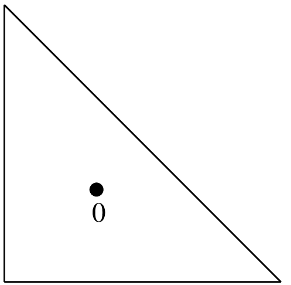 (1/3, 1/3) 1/2 "IM_TRIANGLE(1)"
1 point, order 1.
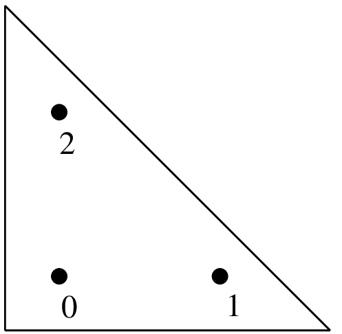 (1/6, 1/6)
(2/3, 1/6)
(1/6, 2/3)
1/6
1/6
1/6
"IM_TRIANGLE(2)"
3 points, order 2.
Integration methods on dimension 2 graphic coordinates (x, y) weights function to call / order 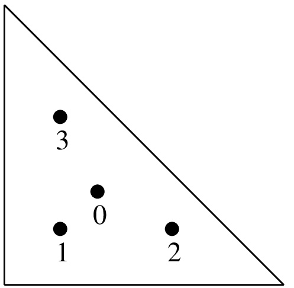 (1/3, 1/3)
(1/5, 1/5)
(3/5, 1/5)
(1/5, 3/5)
-27/96
25/96
25/96
25/96
"IM_TRIANGLE(3)"
4 points, order 3.
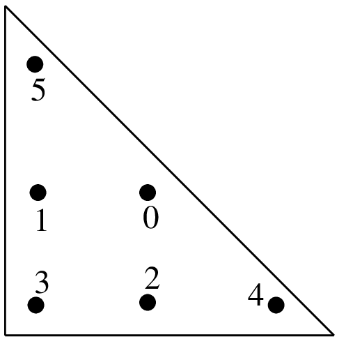 (a, a)
(1-2a, a)
(a, 1-2a)
(b, b)
(1-2b, b)
(b, 1-2b)
c
c
c
d
d
d
"IM_TRIANGLE(4)"
6 points, order 4
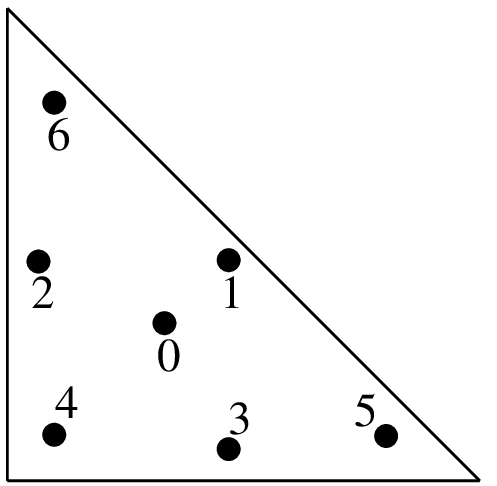 (1/3, 1/3)
(a, a)
(1-2a, a)
(a, 1-2a)
(b, b)
(1-2b, b)
(b, 1-2b)
9/80
c
c
c
d
d
d
"IM_TRIANGLE(5)"
7 points, order 5
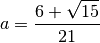 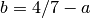 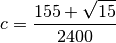 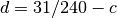
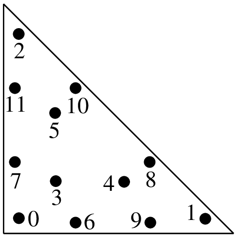 (a, a)
(1-2a, a)
(a, 1-2a)
(b, b)
(1-2b, b)
(b, 1-2b)
(c, d)
(d, c)
(1-c-d, c)
(1-c-d, d)
(c, 1-c-d)
(d, 1-c-d)
e
e
e
f
f
f
g
g
g
g
g
g
"IM_TRIANGLE(6)"
12 points, order 6
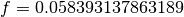 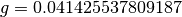
Integration methods on dimension 2 graphic coordinates (x, y) weights function to call / order 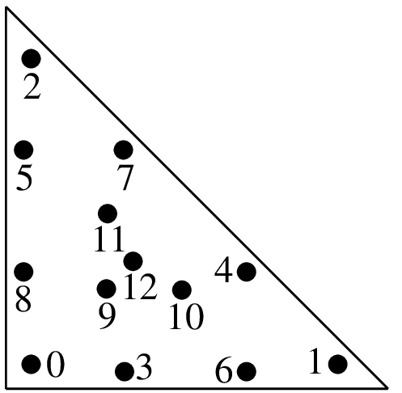 (a, a)
(b, a)
(a, b)
(c, e)
(d, c)
(e, d)
(d, e)
(c, d)
(e, c)
(f, f)
(g, f)
(f, g)
(1/3, 1/3)
h
h
h
i
i
i
i
i
i
j
j
j
k
"IM_TRIANGLE(7)"
13 points, order 7
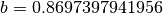 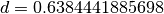 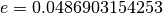 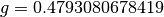 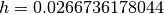 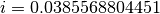 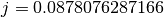 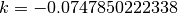
"IM_TRIANGLE(8)"
(see [EncyclopCubature])
"IM_TRIANGLE(9)"
(see [EncyclopCubature])
"IM_TRIANGLE(10)"
(see [EncyclopCubature])
"IM_TRIANGLE(13)"
(see [EncyclopCubature])
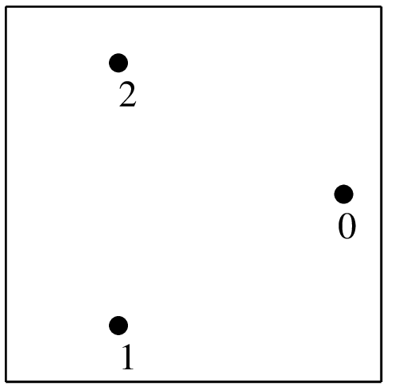 (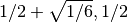)
(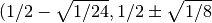)
1/3
1/3
"IM_QUAD(2)"
3 points, order 2
Integration methods on dimension 2 graphic coordinates (x, y) weights function to call / order 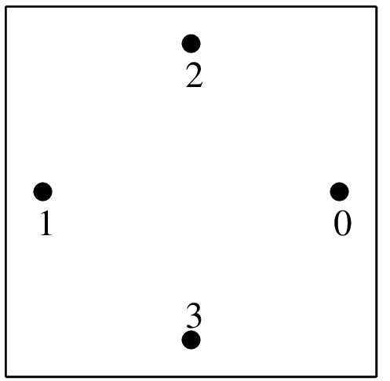 (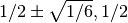)
(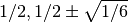)
1/4
1/4
"IM_QUAD(3)"
4 points, order 3
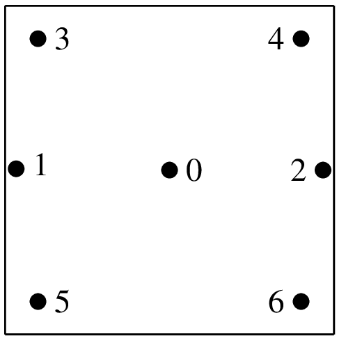 (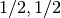)
(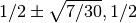)
(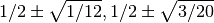)
2/7
5/63
5/36
"IM_QUAD(5)"
7 points, order 5
"IM_QUAD(7)"
12 points, order 7
"IM_QUAD(9)"
20 points, order 9
"IM_QUAD(17)"
70 points, order 17
There is also the "IM_GAUSS_PARALLELEPIPED(n,k)" which is a direct product of 1D gauss integrations.
Important note: do not forget that IM_QUAD(k) is exact for
polynomials up to degree  , and that a
, and that a  polynomial has a degree
of 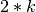. For example, IM_QUAD(7) cannot integrate exactly the product
of two polynomials. On the other hand,
IM_GAUSS_PARALLELEPIPED(2,4) can integrate exactly that product ...
polynomial has a degree
of 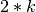. For example, IM_QUAD(7) cannot integrate exactly the product
of two polynomials. On the other hand,
IM_GAUSS_PARALLELEPIPED(2,4) can integrate exactly that product ...
Gauss Integration methods on dimension 3¶
Integration methods on dimension 3 graphic coordinates (x, y) weights function to call / order 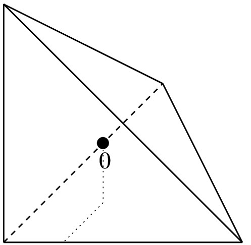 (1/4, 1/4, 1/4) 1/6 "IM_TETRAHEDRON(1)"
1 point, order 1
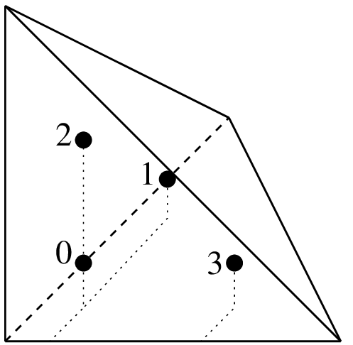 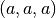
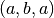
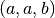
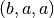
1/24
1/24
1/24
1/24
"IM_TETRAHEDRON(2)"
4 points, order 2} hspace{7em}
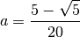
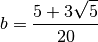
Integration methods on dimension 3 graphic coordinates (x, y) weights function to call / order 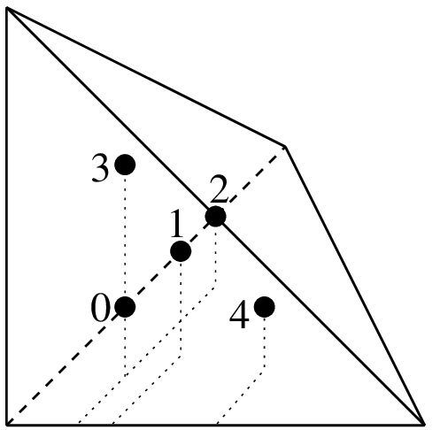 (1/4, 1/4, 1/4)
(1/6, 1/6, 1/6)
(1/6, 1/2, 1/6)
(1/6, 1/6, 1/2)
(1/2, 1/6, 1/6)
-2/15
3/40
3/40
3/40
3/40
"IM_TETRAHEDRON(3)"
5 points, order 3
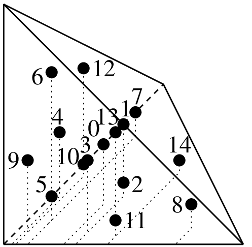 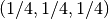
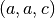
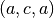
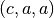
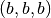
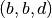
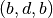
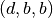
8/405
5/567
5/567
5/567
5/567
5/567
5/567
"IM_TETRAHEDRON(5)"
15 points, order 5

{kind=link}
{kind=link}
{kind=link}
{kind=link}
{kind=link}
{kind=link}
{kind=link}
{kind=link}
{kind=link}
{kind=link}
{kind=link}
{kind=link}
{kind=link}
{kind=link}
Others methods are:
name element type number of points "IM_TETRAHEDRON(6)" tetrahedron 24 "IM_TETRAHEDRON(8)" tetrahedron 43 "IM_SIMPLEX4D(3)" 4D simplex 6 "IM_HEXAHEDRON(5)" 3D hexahedron 14 "IM_HEXAHEDRON(9)" 3D hexahedron 58 "IM_HEXAHEDRON(11)" 3D hexahedron 90 "IM_CUBE4D(5)" 4D parallelepipeded 24 "IM_CUBE4D(9)" 4D parallelepipeded 145
Direct product of integration methods¶
You can use "IM_PRODUCT(IM1, IM2)" to produce integration methods on quadrilateral or prisms. It gives the direct product of two integration methods. For instance "IM_GAUSS_PARALLELEPIPED(2,k)" is an alias for "IM_PRODUCT(IM_GAUSS1D(2,k),IM_GAUSS1D(2,k))" and can be use instead of the "IM_QUAD" integrations.
Specific integration methods¶
For pyramidal elements, "IM_PYRAMID(im)" provides an integration method corresponding to the transformation of an integration im from a hexahedron (for instance "IM_GAUSS_PARALLELEPIPED(3,5)") onto a pyramid. It is a singular integration method specically adapted to rational fraction shape functions of the pyramidal elements.
Composite integration methods¶
{kind=link}
Use "IM_STRUCTURED_COMPOSITE(IM1, S)" to copy IM1 on an element with S subdivisions. The resulting integration method has the same order but with more points. It could be more stable to use a composite method rather than to improve the order of the method. Those methods have to be used also with composite elements. Most of the time for composite element, it is preferable to choose the basic method IM1 with no points on the boundary (because the gradient could be not defined on the boundary of sub-elements).
For the HCT element, it is advised to use the "IM_HCT_COMPOSITE(im)" composite integration (which split the original triangle into 3 sub-triangles).
For pyramidal elements, "IM_PYRAMID_COMPOSITE(im)" provides an integration method ase on the decomposition of the pyramid into two tetrahedrons (im should be an integration method on a tetrahedron). Note that the integraton method "IM_PYRAMID(im)" where im is an integration method on an hexahedron, should be prefered.

目次
前のトピックへ
Appendix A. Finite element method list
次のトピックへ
Download
Main documentations
- GetFEM++ User documentation
- Python Interface
- Matlab Interface
- Scilab Interface
- Gmm++
- GetFEM++ project